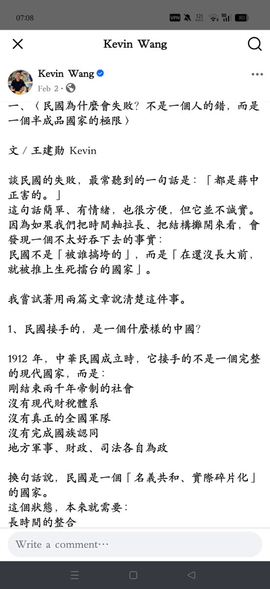

大狐帝国史官邹智萱（笔名段歌文）
@Rococo90933671
逛过脸书中文区的人表示这是真的，好多这种看得让人火大又不知道怎么反驳的言论，细究才发现那是真的没水准，或者说直接用gpt生成的格式就复制粘贴过来了。
比如一个站在民国的立场上洗蒋介石的，写的文章看似长篇大论，头头是道，但是真的纯gpt味

夏河
@jlaw520
先不管台湾绿营和日本长崎怎么了，就说一点，每读政客的脸书文章，最大的震撼都不是他的立场，而是他的水准。幼稚的因果关系、情绪化的口号、近乎小学生式的政治推演，让人忍不住产生三个疑问： https://t.co/eJkosg8gx1